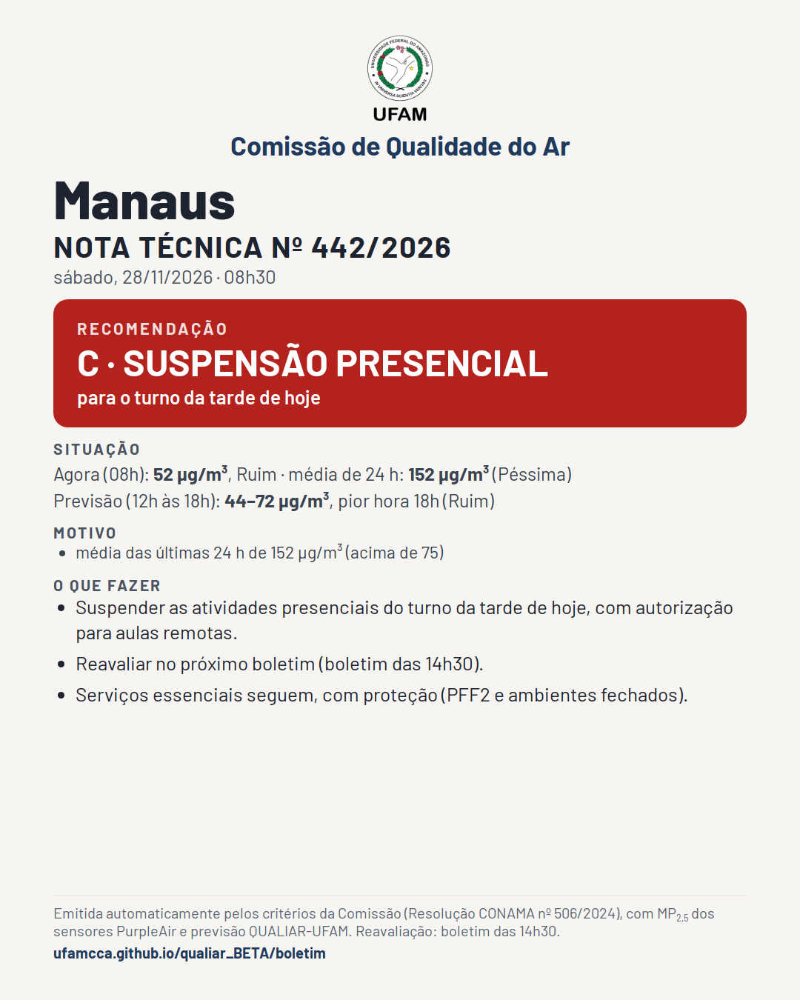
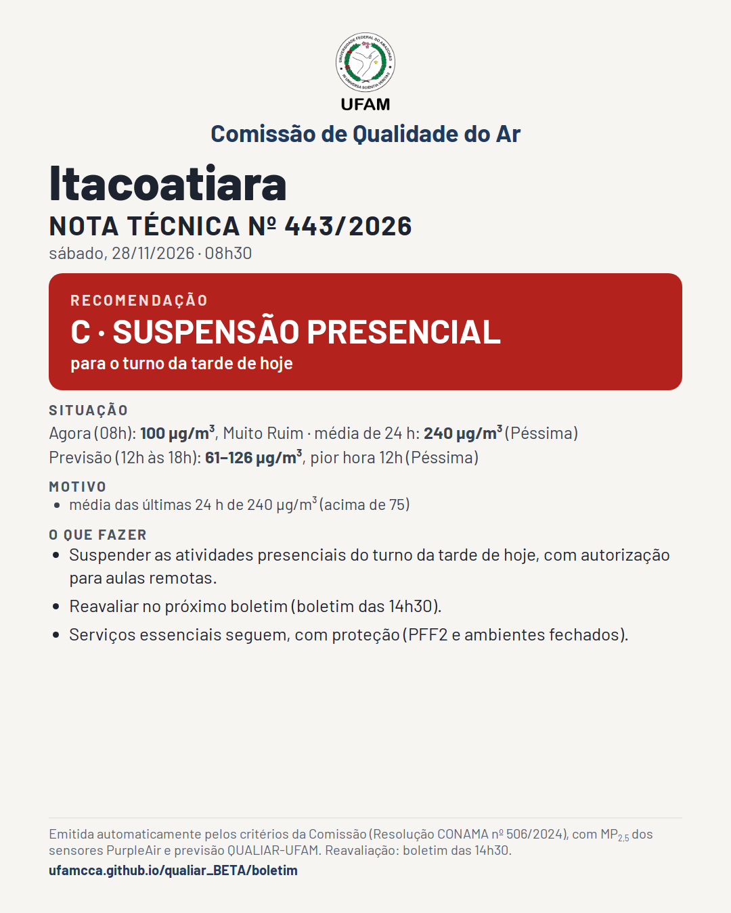
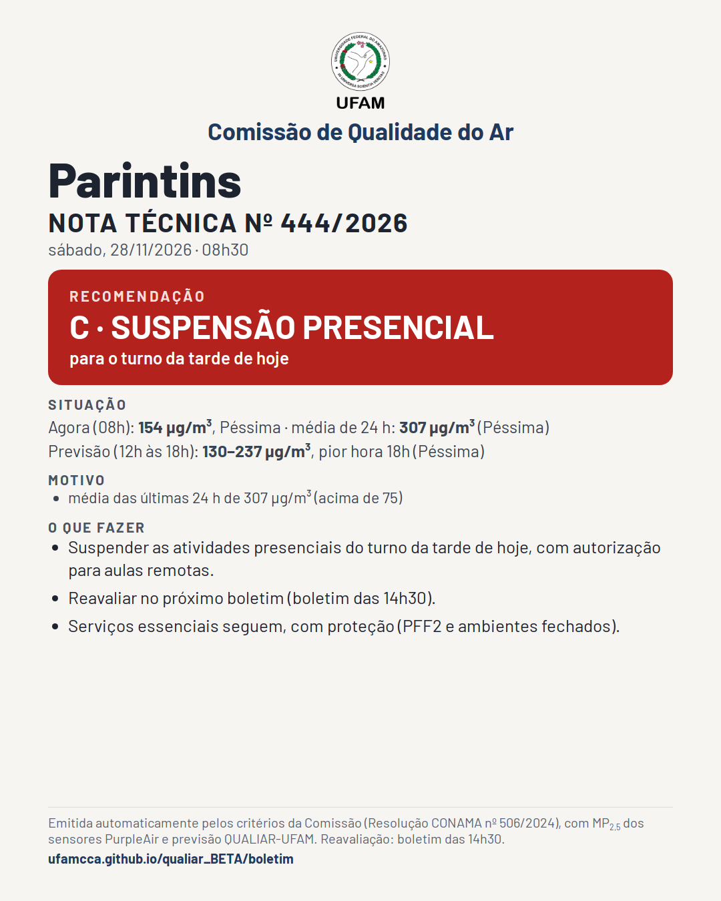
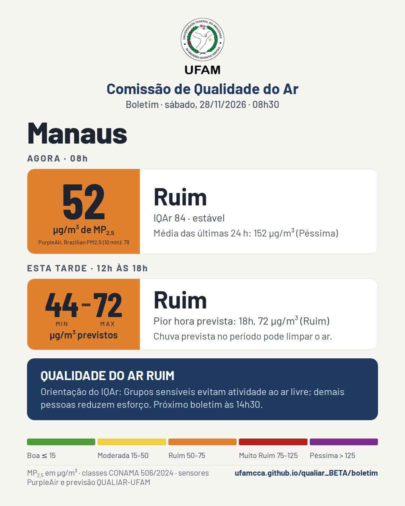
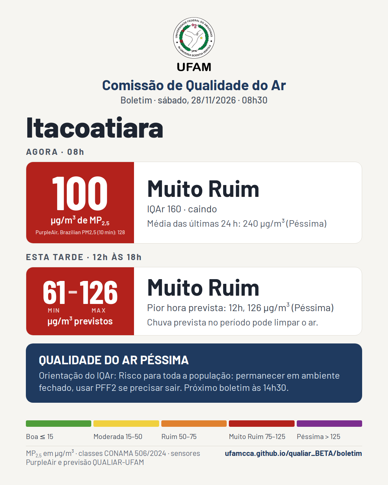
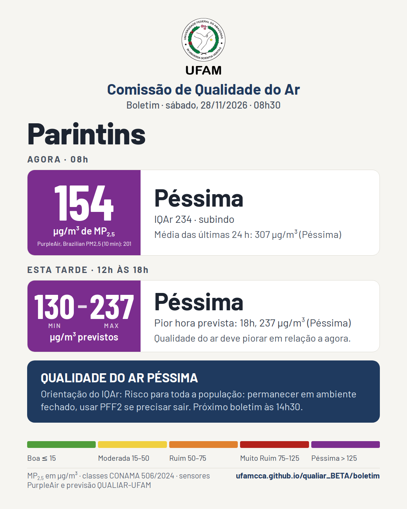
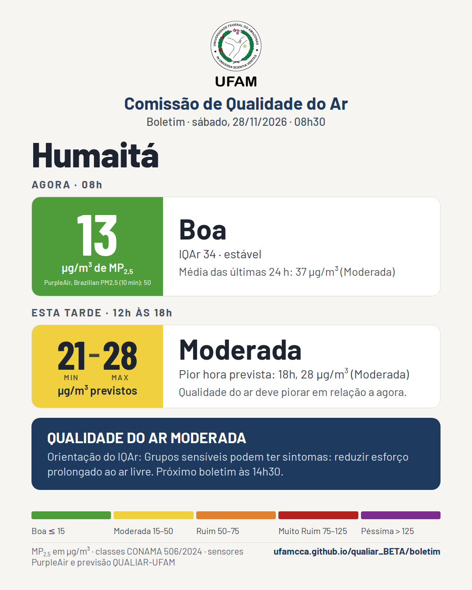
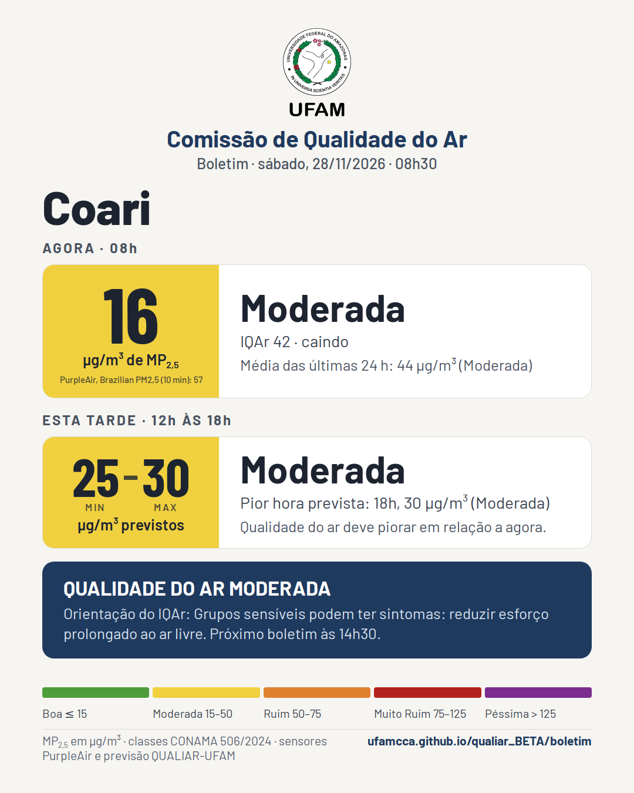
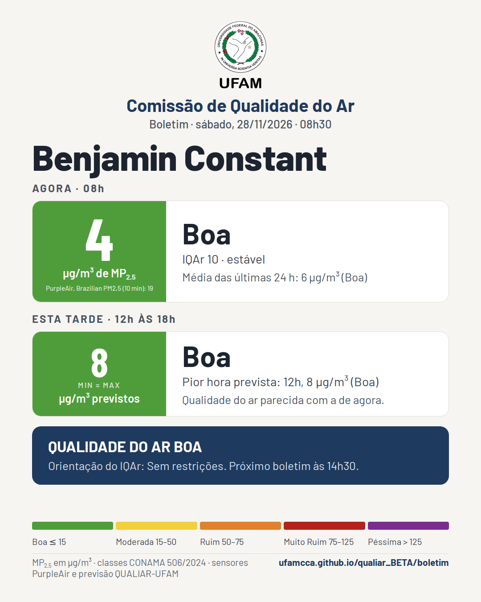

Boletim da qualidade do ar
Comissão de Qualidade do Ar da UFAM · edição de sábado, 28/11/2026, 08h30 · previsão hora a hora no QUALIAR-UFAM
Notas técnicas desta edição






Boletim












A Comissão emite nota técnica para a cidade só quando a recomendação é B (atividades com restrição) ou C (suspensão presencial). Valores de material particulado fino (MP2,5) em µg/m³, mediana dos sensores PurpleAir de cada cidade (correção EPA), classes da Resolução CONAMA nº 506/2024. A previsão é a versão publicada do modelo QUALIAR-UFAM. Boletins às 20h30, 02h30, 08h30 e 14h30. Toque na imagem para abrir em tamanho cheio e compartilhar.
Boletins anteriores
- 28/11/2026 08h30 · Manaus: agora 52 (Ruim) → 44–72 (Ruim) · Itacoatiara: agora 100 (Muito Ruim) → 61–126 (Muito Ruim) · Parintins: agora 154 (Péssima) → 130–237 (Péssima) · Humaitá: agora 13 (Boa) → 21–28 (Moderada) · Coari: agora 16 (Moderada) → 25–30 (Moderada) · Benjamin Constant: agora 4 (Boa) → 8 (Boa) · Nota 442/2026: Manaus, C · SUSPENSÃO PRESENCIAL · Nota 443/2026: Itacoatiara, C · SUSPENSÃO PRESENCIAL · Nota 444/2026: Parintins, C · SUSPENSÃO PRESENCIAL
- 28/11/2026 02h30 · Manaus: agora 89 (Muito Ruim) → 35–109 (Ruim) · Itacoatiara: agora 152 (Péssima) → 68–143 (Muito Ruim) · Parintins: agora 162 (Péssima) → 87–201 (Péssima) · Humaitá: agora 17 (Moderada) → 26–35 (Moderada) · Coari: agora 25 (Moderada) → 32–39 (Moderada) · Benjamin Constant: agora 7 (Boa) → 9–10 (Boa) · Nota 437/2026: Manaus, C · SUSPENSÃO PRESENCIAL · Nota 438/2026: Itacoatiara, C · SUSPENSÃO PRESENCIAL · Nota 439/2026: Parintins, C · SUSPENSÃO PRESENCIAL · Nota 440/2026: Humaitá, B · ATIVIDADES COM RESTRIÇÃO · Nota 441/2026: Coari, B · ATIVIDADES COM RESTRIÇÃO
- 27/11/2026 20h30 · Manaus: agora 170 (Péssima) → 62–194 (Ruim) · Itacoatiara: agora 449 (Péssima) → 229–326 (Péssima) · Parintins: agora 215 (Péssima) → 150–224 (Péssima) · Humaitá: agora 44 (Moderada) → 53–56 (Ruim) · Coari: agora 49 (Moderada) → 56–59 (Ruim) · Benjamin Constant: agora 13 (Boa) → 14–15 (Boa) · Nota 432/2026: Manaus, C · SUSPENSÃO PRESENCIAL · Nota 433/2026: Itacoatiara, C · SUSPENSÃO PRESENCIAL · Nota 434/2026: Parintins, C · SUSPENSÃO PRESENCIAL · Nota 435/2026: Humaitá, B · ATIVIDADES COM RESTRIÇÃO · Nota 436/2026: Coari, B · ATIVIDADES COM RESTRIÇÃO
- 27/11/2026 14h30 · Manaus: agora 171 (Péssima) → 186–204 (Péssima) · Itacoatiara: agora 291 (Péssima) → 233–294 (Péssima) · Parintins: agora 433 (Péssima) → 182–536 (Péssima) · Humaitá: agora 45 (Moderada) → 55–65 (Ruim) · Coari: agora 76 (Muito Ruim) → 62–85 (Muito Ruim) · Benjamin Constant: agora 4 (Boa) → 8 (Boa) · Nota 427/2026: Manaus, C · SUSPENSÃO PRESENCIAL · Nota 428/2026: Itacoatiara, C · SUSPENSÃO PRESENCIAL · Nota 429/2026: Parintins, C · SUSPENSÃO PRESENCIAL · Nota 430/2026: Humaitá, B · ATIVIDADES COM RESTRIÇÃO · Nota 431/2026: Coari, C · SUSPENSÃO PRESENCIAL
- 27/11/2026 08h30 · Manaus: agora 132 (Péssima) → 141–184 (Péssima) · Itacoatiara: agora 299 (Péssima) → 296–309 (Péssima) · Parintins: agora 559 (Péssima) → 602–642 (Péssima) · Humaitá: agora 69 (Ruim) → 64–76 (Ruim) · Coari: agora 54 (Ruim) → 46–67 (Ruim) · Benjamin Constant: agora 3 (Boa) → 8 (Boa) · Nota 422/2026: Manaus, C · SUSPENSÃO PRESENCIAL · Nota 423/2026: Itacoatiara, C · SUSPENSÃO PRESENCIAL · Nota 424/2026: Parintins, C · SUSPENSÃO PRESENCIAL · Nota 425/2026: Humaitá, C · SUSPENSÃO PRESENCIAL · Nota 426/2026: Coari, C · SUSPENSÃO PRESENCIAL
- 27/11/2026 02h30 · Manaus: agora 232 (Péssima) → 161–253 (Péssima) · Itacoatiara: agora 262 (Péssima) → 273–310 (Péssima) · Parintins: agora 964 (Péssima) → 675–770 (Péssima) · Humaitá: agora 54 (Ruim) → 59–69 (Ruim) · Coari: agora 68 (Ruim) → 35–75 (Ruim) · Benjamin Constant: agora 4 (Boa) → 8 (Boa) · Nota 417/2026: Manaus, C · SUSPENSÃO PRESENCIAL · Nota 418/2026: Itacoatiara, C · SUSPENSÃO PRESENCIAL · Nota 419/2026: Parintins, C · SUSPENSÃO PRESENCIAL · Nota 420/2026: Humaitá, C · SUSPENSÃO PRESENCIAL · Nota 421/2026: Coari, C · SUSPENSÃO PRESENCIAL
- 26/11/2026 20h30 · Manaus: agora 191 (Péssima) → 199–209 (Péssima) · Itacoatiara: agora 301 (Péssima) → 208–297 (Péssima) · Parintins: agora 1006 (Péssima) → 1248–1293 (Péssima) · Humaitá: agora 72 (Ruim) → 64–71 (Ruim) · Coari: agora 95 (Muito Ruim) → 51–88 (Muito Ruim) · Benjamin Constant: agora 11 (Boa) → 13 (Boa) · Nota 412/2026: Manaus, C · SUSPENSÃO PRESENCIAL · Nota 413/2026: Itacoatiara, C · SUSPENSÃO PRESENCIAL · Nota 414/2026: Parintins, C · SUSPENSÃO PRESENCIAL · Nota 415/2026: Humaitá, C · SUSPENSÃO PRESENCIAL · Nota 416/2026: Coari, C · SUSPENSÃO PRESENCIAL
- 26/11/2026 14h30 · Manaus: agora 314 (Péssima) → 185–267 (Péssima) · Itacoatiara: agora 293 (Péssima) → 95–313 (Péssima) · Parintins: agora 227 (Péssima) → 378–495 (Péssima) · Humaitá: agora 120 (Muito Ruim) → 83–112 (Muito Ruim) · Coari: agora 141 (Péssima) → 93–122 (Muito Ruim) · Benjamin Constant: agora 4 (Boa) → 8 (Boa) · Nota 407/2026: Manaus, C · SUSPENSÃO PRESENCIAL · Nota 408/2026: Itacoatiara, C · SUSPENSÃO PRESENCIAL · Nota 409/2026: Parintins, C · SUSPENSÃO PRESENCIAL · Nota 410/2026: Humaitá, C · SUSPENSÃO PRESENCIAL · Nota 411/2026: Coari, B · ATIVIDADES COM RESTRIÇÃO
- 26/11/2026 08h30 · Manaus: agora 349 (Péssima) → 305–346 (Péssima) · Itacoatiara: agora 456 (Péssima) → 360–407 (Péssima) · Parintins: agora 743 (Péssima) → 622–708 (Péssima) · Humaitá: agora 67 (Ruim) → 50–66 (Ruim) · Coari: agora 68 (Ruim) → 72–73 (Ruim) · Benjamin Constant: agora 2 (Boa) → 8 (Boa) · Nota 402/2026: Manaus, C · SUSPENSÃO PRESENCIAL · Nota 403/2026: Itacoatiara, C · SUSPENSÃO PRESENCIAL · Nota 404/2026: Parintins, C · SUSPENSÃO PRESENCIAL · Nota 405/2026: Humaitá, B · ATIVIDADES COM RESTRIÇÃO · Nota 406/2026: Coari, B · ATIVIDADES COM RESTRIÇÃO
- 26/11/2026 02h30 · Manaus: agora 116 (Muito Ruim) → 129–131 (Péssima) · Itacoatiara: agora 345 (Péssima) → 315–331 (Péssima) · Parintins: agora 1303 (Péssima) → 1351–1468 (Péssima) · Humaitá: agora 67 (Ruim) → 68–69 (Ruim) · Coari: agora 43 (Moderada) → 46–49 (Moderada) · Benjamin Constant: agora 3 (Boa) → 8 (Boa) · Nota 397/2026: Manaus, C · SUSPENSÃO PRESENCIAL · Nota 398/2026: Itacoatiara, C · SUSPENSÃO PRESENCIAL · Nota 399/2026: Parintins, C · SUSPENSÃO PRESENCIAL · Nota 400/2026: Humaitá, B · ATIVIDADES COM RESTRIÇÃO · Nota 401/2026: Coari, B · ATIVIDADES COM RESTRIÇÃO
- 25/11/2026 20h30 · Manaus: agora 89 (Muito Ruim) → 97–99 (Muito Ruim) · Itacoatiara: agora 180 (Péssima) → 234–245 (Péssima) · Parintins: agora 818 (Péssima) → 1040–1077 (Péssima) · Humaitá: agora 75 (Muito Ruim) → 67–69 (Ruim) · Coari: agora 55 (Ruim) → 60 (Ruim) · Benjamin Constant: agora 6 (Boa) → 8 (Boa) · Nota 392/2026: Manaus, C · SUSPENSÃO PRESENCIAL · Nota 393/2026: Itacoatiara, C · SUSPENSÃO PRESENCIAL · Nota 394/2026: Parintins, C · SUSPENSÃO PRESENCIAL · Nota 395/2026: Humaitá, B · ATIVIDADES COM RESTRIÇÃO · Nota 396/2026: Coari, B · ATIVIDADES COM RESTRIÇÃO
- 25/11/2026 14h30 · Manaus: agora 72 (Ruim) → 79–89 (Muito Ruim) · Itacoatiara: agora 165 (Péssima) → 192–220 (Péssima) · Parintins: agora 246 (Péssima) → 375–507 (Péssima) · Humaitá: agora 92 (Muito Ruim) → 44–93 (Ruim) · Coari: agora 81 (Muito Ruim) → 81–89 (Muito Ruim) · Benjamin Constant: agora 6 (Boa) → 9 (Boa) · Nota 387/2026: Manaus, C · SUSPENSÃO PRESENCIAL · Nota 388/2026: Itacoatiara, C · SUSPENSÃO PRESENCIAL · Nota 389/2026: Parintins, C · SUSPENSÃO PRESENCIAL · Nota 390/2026: Humaitá, B · ATIVIDADES COM RESTRIÇÃO · Nota 391/2026: Coari, B · ATIVIDADES COM RESTRIÇÃO
- 25/11/2026 08h30 · Manaus: agora 138 (Péssima) → 136–145 (Péssima) · Itacoatiara: agora 551 (Péssima) → 467–553 (Péssima) · Parintins: agora 773 (Péssima) → 648–739 (Péssima) · Humaitá: agora 50 (Moderada) → 53–58 (Ruim) · Coari: agora 82 (Muito Ruim) → 73–84 (Muito Ruim) · Benjamin Constant: agora 6 (Boa) → 10 (Boa) · Nota 382/2026: Manaus, C · SUSPENSÃO PRESENCIAL · Nota 383/2026: Itacoatiara, C · SUSPENSÃO PRESENCIAL · Nota 384/2026: Parintins, C · SUSPENSÃO PRESENCIAL · Nota 385/2026: Humaitá, B · ATIVIDADES COM RESTRIÇÃO · Nota 386/2026: Coari, B · ATIVIDADES COM RESTRIÇÃO
- 25/11/2026 02h30 · Manaus: agora 103 (Muito Ruim) → 104–105 (Muito Ruim) · Itacoatiara: agora 170 (Péssima) → 196–205 (Péssima) · Parintins: agora 763 (Péssima) → 660–714 (Péssima) · Humaitá: agora 53 (Ruim) → 56–59 (Ruim) · Coari: agora 46 (Moderada) → 48–50 (Moderada) · Benjamin Constant: agora 3 (Boa) → 8–9 (Boa) · Nota 377/2026: Manaus, C · SUSPENSÃO PRESENCIAL · Nota 378/2026: Itacoatiara, C · SUSPENSÃO PRESENCIAL · Nota 379/2026: Parintins, C · SUSPENSÃO PRESENCIAL · Nota 380/2026: Humaitá, B · ATIVIDADES COM RESTRIÇÃO · Nota 381/2026: Coari, B · ATIVIDADES COM RESTRIÇÃO
- 24/11/2026 20h30 · Manaus: agora 79 (Muito Ruim) → 107–111 (Muito Ruim) · Itacoatiara: agora 117 (Muito Ruim) → 166–179 (Péssima) · Parintins: agora 1524 (Péssima) → 1738–1876 (Péssima) · Humaitá: agora 47 (Moderada) → 56–59 (Ruim) · Coari: agora 53 (Ruim) → 56–57 (Ruim) · Benjamin Constant: agora 2 (Boa) → 8 (Boa) · Nota 372/2026: Manaus, C · SUSPENSÃO PRESENCIAL · Nota 373/2026: Itacoatiara, C · SUSPENSÃO PRESENCIAL · Nota 374/2026: Parintins, C · SUSPENSÃO PRESENCIAL · Nota 375/2026: Humaitá, B · ATIVIDADES COM RESTRIÇÃO · Nota 376/2026: Coari, B · ATIVIDADES COM RESTRIÇÃO
- 24/11/2026 14h30 · Manaus: agora 84 (Muito Ruim) → 93–103 (Muito Ruim) · Itacoatiara: agora 115 (Muito Ruim) → 156–198 (Péssima) · Parintins: agora 158 (Péssima) → 331–510 (Péssima) · Humaitá: agora 79 (Muito Ruim) → 62–71 (Ruim) · Coari: agora 48 (Moderada) → 51–58 (Ruim) · Benjamin Constant: agora 6 (Boa) → 8–9 (Boa) · Nota 367/2026: Manaus, C · SUSPENSÃO PRESENCIAL · Nota 368/2026: Itacoatiara, C · SUSPENSÃO PRESENCIAL · Nota 369/2026: Parintins, C · SUSPENSÃO PRESENCIAL · Nota 370/2026: Humaitá, B · ATIVIDADES COM RESTRIÇÃO · Nota 371/2026: Coari, B · ATIVIDADES COM RESTRIÇÃO
- 24/11/2026 08h30 · Manaus: agora 150 (Péssima) → 122–132 (Péssima) · Itacoatiara: agora 400 (Péssima) → 418–436 (Péssima) · Parintins: agora 866 (Péssima) → 784–814 (Péssima) · Humaitá: agora 52 (Ruim) → 41–44 (Moderada) · Coari: agora 59 (Ruim) → 54–59 (Ruim) · Benjamin Constant: agora 5 (Boa) → 8–9 (Boa) · Nota 362/2026: Manaus, C · SUSPENSÃO PRESENCIAL · Nota 363/2026: Itacoatiara, C · SUSPENSÃO PRESENCIAL · Nota 364/2026: Parintins, C · SUSPENSÃO PRESENCIAL · Nota 365/2026: Humaitá, B · ATIVIDADES COM RESTRIÇÃO · Nota 366/2026: Coari, B · ATIVIDADES COM RESTRIÇÃO
- 24/11/2026 02h30 · Manaus: agora 118 (Muito Ruim) → 100–114 (Muito Ruim) · Itacoatiara: agora 251 (Péssima) → 272–274 (Péssima) · Parintins: agora 853 (Péssima) → 667–765 (Péssima) · Humaitá: agora 57 (Ruim) → 42–52 (Moderada) · Coari: agora 55 (Ruim) → 48–52 (Moderada) · Benjamin Constant: agora 3 (Boa) → 8 (Boa) · Nota 357/2026: Manaus, C · SUSPENSÃO PRESENCIAL · Nota 358/2026: Itacoatiara, C · SUSPENSÃO PRESENCIAL · Nota 359/2026: Parintins, C · SUSPENSÃO PRESENCIAL · Nota 360/2026: Humaitá, B · ATIVIDADES COM RESTRIÇÃO · Nota 361/2026: Coari, B · ATIVIDADES COM RESTRIÇÃO
- 23/11/2026 20h30 · Manaus: agora 81 (Muito Ruim) → 74–79 (Muito Ruim) · Itacoatiara: agora 201 (Péssima) → 224–227 (Péssima) · Parintins: agora 1056 (Péssima) → 1252–1334 (Péssima) · Humaitá: agora 27 (Moderada) → 19–21 (Moderada) · Coari: agora 71 (Ruim) → 39–46 (Moderada) · Benjamin Constant: agora 6 (Boa) → 9 (Boa) · Nota 353/2026: Manaus, B · ATIVIDADES COM RESTRIÇÃO · Nota 354/2026: Itacoatiara, C · SUSPENSÃO PRESENCIAL · Nota 355/2026: Parintins, C · SUSPENSÃO PRESENCIAL · Nota 356/2026: Coari, B · ATIVIDADES COM RESTRIÇÃO
- 23/11/2026 14h30 · Manaus: agora 76 (Muito Ruim) → 62–67 (Ruim) · Itacoatiara: agora 194 (Péssima) → 201–208 (Péssima) · Parintins: agora 160 (Péssima) → 271–385 (Péssima) · Humaitá: agora 19 (Moderada) → 22–23 (Moderada) · Coari: agora 68 (Ruim) → 60–80 (Ruim) · Benjamin Constant: agora 4 (Boa) → 8–9 (Boa) · Nota 349/2026: Manaus, B · ATIVIDADES COM RESTRIÇÃO · Nota 350/2026: Itacoatiara, C · SUSPENSÃO PRESENCIAL · Nota 351/2026: Parintins, C · SUSPENSÃO PRESENCIAL · Nota 352/2026: Coari, B · ATIVIDADES COM RESTRIÇÃO
- 23/11/2026 08h30 · Manaus: agora 49 (Moderada) → 42–51 (Moderada) · Itacoatiara: agora 156 (Péssima) → 166–185 (Péssima) · Parintins: agora 699 (Péssima) → 615–668 (Péssima) · Humaitá: agora 12 (Boa) → 14–16 (Boa) · Coari: agora 9 (Boa) → 10 (Boa) · Benjamin Constant: agora 2 (Boa) → 8 (Boa) · Nota 346/2026: Manaus, B · ATIVIDADES COM RESTRIÇÃO · Nota 347/2026: Itacoatiara, C · SUSPENSÃO PRESENCIAL · Nota 348/2026: Parintins, C · SUSPENSÃO PRESENCIAL
- 23/11/2026 02h30 · Manaus: agora 41 (Moderada) → 46–49 (Moderada) · Itacoatiara: agora 230 (Péssima) → 189–213 (Péssima) · Parintins: agora 1016 (Péssima) → 704–880 (Péssima) · Humaitá: agora 14 (Boa) → 16–17 (Moderada) · Coari: agora 5 (Boa) → 8 (Boa) · Benjamin Constant: agora 3 (Boa) → 8 (Boa) · Nota 343/2026: Manaus, B · ATIVIDADES COM RESTRIÇÃO · Nota 344/2026: Itacoatiara, C · SUSPENSÃO PRESENCIAL · Nota 345/2026: Parintins, C · SUSPENSÃO PRESENCIAL
- 22/11/2026 20h30 · Manaus: agora 53 (Ruim) → 52–58 (Ruim) · Itacoatiara: agora 179 (Péssima) → 145–153 (Péssima) · Parintins: agora 334 (Péssima) → 525–538 (Péssima) · Humaitá: agora 29 (Moderada) → 20–22 (Moderada) · Coari: agora 5 (Boa) → 9 (Boa) · Benjamin Constant: agora 5 (Boa) → 8–10 (Boa) · Nota 340/2026: Manaus, B · ATIVIDADES COM RESTRIÇÃO · Nota 341/2026: Itacoatiara, C · SUSPENSÃO PRESENCIAL · Nota 342/2026: Parintins, C · SUSPENSÃO PRESENCIAL
- 22/11/2026 14h30 · Manaus: agora 70 (Ruim) → 58–64 (Ruim) · Itacoatiara: agora 181 (Péssima) → 122–152 (Péssima) · Parintins: agora 105 (Muito Ruim) → 220–339 (Péssima) · Humaitá: agora 15 (Moderada) → 15–16 (Moderada) · Coari: agora 3 (Boa) → 9–10 (Boa) · Benjamin Constant: agora 4 (Boa) → 8–9 (Boa) · Nota 337/2026: Manaus, B · ATIVIDADES COM RESTRIÇÃO · Nota 338/2026: Itacoatiara, C · SUSPENSÃO PRESENCIAL · Nota 339/2026: Parintins, C · SUSPENSÃO PRESENCIAL
- 22/11/2026 08h30 · Manaus: agora 71 (Ruim) → 58–64 (Ruim) · Itacoatiara: agora 85 (Muito Ruim) → 80–83 (Muito Ruim) · Parintins: agora 347 (Péssima) → 337–361 (Péssima) · Humaitá: agora 11 (Boa) → 12–13 (Boa) · Coari: agora 3 (Boa) → 8 (Boa) · Benjamin Constant: agora 2 (Boa) → 8 (Boa) · Nota 334/2026: Manaus, B · ATIVIDADES COM RESTRIÇÃO · Nota 335/2026: Itacoatiara, C · SUSPENSÃO PRESENCIAL · Nota 336/2026: Parintins, C · SUSPENSÃO PRESENCIAL
- 22/11/2026 02h30 · Manaus: agora 43 (Moderada) → 35–40 (Moderada) · Itacoatiara: agora 81 (Muito Ruim) → 82–86 (Muito Ruim) · Parintins: agora 578 (Péssima) → 394–457 (Péssima) · Humaitá: agora 8 (Boa) → 8–9 (Boa) · Coari: agora 4 (Boa) → 8–10 (Boa) · Benjamin Constant: agora 3 (Boa) → 8 (Boa) · Nota 332/2026: Itacoatiara, C · SUSPENSÃO PRESENCIAL · Nota 333/2026: Parintins, C · SUSPENSÃO PRESENCIAL
- 21/11/2026 20h30 · Manaus: agora 52 (Ruim) → 42–48 (Moderada) · Itacoatiara: agora 67 (Ruim) → 70–71 (Ruim) · Parintins: agora 168 (Péssima) → 194–198 (Péssima) · Humaitá: agora 9 (Boa) → 9 (Boa) · Coari: agora 5 (Boa) → 8 (Boa) · Benjamin Constant: agora 8 (Boa) → 12 (Boa) · Nota 329/2026: Manaus, B · ATIVIDADES COM RESTRIÇÃO · Nota 330/2026: Itacoatiara, B · ATIVIDADES COM RESTRIÇÃO · Nota 331/2026: Parintins, C · SUSPENSÃO PRESENCIAL
- 21/11/2026 14h30 · Manaus: agora 20 (Moderada) → 17–19 (Moderada) · Itacoatiara: agora 55 (Ruim) → 71–88 (Muito Ruim) · Parintins: agora 113 (Muito Ruim) → 122–131 (Péssima) · Humaitá: agora 8 (Boa) → 8 (Boa) · Coari: agora 6 (Boa) → 8 (Boa) · Benjamin Constant: agora 3 (Boa) → 8 (Boa) · Nota 327/2026: Itacoatiara, C · SUSPENSÃO PRESENCIAL · Nota 328/2026: Parintins, C · SUSPENSÃO PRESENCIAL
- 21/11/2026 08h30 · Manaus: agora 16 (Moderada) → 13–16 (Boa) · Itacoatiara: agora 86 (Muito Ruim) → 80–91 (Muito Ruim) · Parintins: agora 205 (Péssima) → 173–190 (Péssima) · Humaitá: agora 12 (Boa) → 13–14 (Boa) · Coari: agora 3 (Boa) → 8 (Boa) · Benjamin Constant: agora 2 (Boa) → 8 (Boa) · Nota 325/2026: Itacoatiara, C · SUSPENSÃO PRESENCIAL · Nota 326/2026: Parintins, C · SUSPENSÃO PRESENCIAL
- 21/11/2026 02h30 · Manaus: agora 14 (Boa) → 13–14 (Boa) · Itacoatiara: agora 78 (Muito Ruim) → 93–98 (Muito Ruim) · Parintins: agora 91 (Muito Ruim) → 88–92 (Muito Ruim) · Humaitá: agora 10 (Boa) → 12–13 (Boa) · Coari: agora 3 (Boa) → 8 (Boa) · Benjamin Constant: agora 2 (Boa) → 8 (Boa) · Nota 323/2026: Itacoatiara, C · SUSPENSÃO PRESENCIAL · Nota 324/2026: Parintins, C · SUSPENSÃO PRESENCIAL
- 20/11/2026 20h30 · Manaus: agora 15 (Moderada) → 11–15 (Boa) · Itacoatiara: agora 48 (Moderada) → 84–89 (Muito Ruim) · Parintins: agora 95 (Muito Ruim) → 94–99 (Muito Ruim) · Humaitá: agora 4 (Boa) → 12–13 (Boa) · Coari: agora 3 (Boa) → 8 (Boa) · Benjamin Constant: agora 7 (Boa) → 10 (Boa) · Nota 321/2026: Itacoatiara, C · SUSPENSÃO PRESENCIAL · Nota 322/2026: Parintins, C · SUSPENSÃO PRESENCIAL
- 20/11/2026 14h30 · Manaus: agora 11 (Boa) → 13–14 (Boa) · Itacoatiara: agora 91 (Muito Ruim) → 120–126 (Péssima) · Parintins: agora 88 (Muito Ruim) → 96–104 (Muito Ruim) · Humaitá: agora 21 (Moderada) → 21–22 (Moderada) · Coari: agora 4 (Boa) → 9–10 (Boa) · Benjamin Constant: agora 5 (Boa) → 8–9 (Boa) · Nota 319/2026: Itacoatiara, C · SUSPENSÃO PRESENCIAL · Nota 320/2026: Parintins, C · SUSPENSÃO PRESENCIAL
- 20/11/2026 08h30 · Manaus: agora 10 (Boa) → 13–15 (Boa) · Itacoatiara: agora 38 (Moderada) → 51–71 (Ruim) · Parintins: agora 63 (Ruim) → 96–121 (Muito Ruim) · Humaitá: agora 11 (Boa) → 15–18 (Moderada) · Coari: agora 3 (Boa) → 14–18 (Moderada) · Benjamin Constant: agora 2 (Boa) → 8 (Boa) · Nota 317/2026: Itacoatiara, C · SUSPENSÃO PRESENCIAL · Nota 318/2026: Parintins, C · SUSPENSÃO PRESENCIAL
- 20/11/2026 02h30 · Manaus: agora 12 (Boa) → 11–17 (Boa) · Itacoatiara: agora 69 (Ruim) → 24–63 (Moderada) · Parintins: agora 89 (Muito Ruim) → 121–150 (Péssima) · Humaitá: agora 13 (Boa) → 16–19 (Moderada) · Coari: agora 14 (Boa) → 18–22 (Moderada) · Benjamin Constant: agora 2 (Boa) → 8 (Boa) · Nota 315/2026: Itacoatiara, C · SUSPENSÃO PRESENCIAL · Nota 316/2026: Parintins, C · SUSPENSÃO PRESENCIAL
- 19/11/2026 20h30 · Manaus: agora 12 (Boa) → 11–22 (Boa) · Itacoatiara: agora 128 (Péssima) → 10–45 (Moderada) · Parintins: agora 142 (Péssima) → 117–200 (Péssima) · Humaitá: agora 15 (Boa) → 21–22 (Moderada) · Coari: agora 13 (Boa) → 12–23 (Moderada) · Benjamin Constant: agora 3 (Boa) → 8 (Boa) · Nota 312/2026: Manaus, B · ATIVIDADES COM RESTRIÇÃO · Nota 313/2026: Itacoatiara, C · SUSPENSÃO PRESENCIAL · Nota 314/2026: Parintins, C · SUSPENSÃO PRESENCIAL
- 19/11/2026 14h30 · Manaus: agora 19 (Moderada) → 13–37 (Moderada) · Itacoatiara: agora 117 (Muito Ruim) → 9–113 (Ruim) · Parintins: agora 153 (Péssima) → 61–209 (Muito Ruim) · Humaitá: agora 23 (Moderada) → 15–28 (Moderada) · Coari: agora 56 (Ruim) → 30–41 (Moderada) · Benjamin Constant: agora 3 (Boa) → 8 (Boa) · Nota 308/2026: Manaus, B · ATIVIDADES COM RESTRIÇÃO · Nota 309/2026: Itacoatiara, C · SUSPENSÃO PRESENCIAL · Nota 310/2026: Parintins, C · SUSPENSÃO PRESENCIAL · Nota 311/2026: Coari, B · ATIVIDADES COM RESTRIÇÃO
- 19/11/2026 08h30 · Manaus: agora 93 (Muito Ruim) → 44–77 (Ruim) · Itacoatiara: agora 120 (Muito Ruim) → 53–98 (Muito Ruim) · Parintins: agora 150 (Péssima) → 97–171 (Péssima) · Humaitá: agora 33 (Moderada) → 21–36 (Moderada) · Coari: agora 44 (Moderada) → 29–41 (Moderada) · Benjamin Constant: agora 4 (Boa) → 9 (Boa) · Nota 304/2026: Manaus, B · ATIVIDADES COM RESTRIÇÃO · Nota 305/2026: Itacoatiara, C · SUSPENSÃO PRESENCIAL · Nota 306/2026: Parintins, C · SUSPENSÃO PRESENCIAL · Nota 307/2026: Coari, B · ATIVIDADES COM RESTRIÇÃO
- 19/11/2026 02h30 · Manaus: agora 83 (Muito Ruim) → 82–92 (Muito Ruim) · Itacoatiara: agora 127 (Péssima) → 115–126 (Muito Ruim) · Parintins: agora 801 (Péssima) → 804–967 (Péssima) · Humaitá: agora 6 (Boa) → 8–9 (Boa) · Coari: agora 8 (Boa) → 9 (Boa) · Benjamin Constant: agora 2 (Boa) → 8 (Boa) · Nota 301/2026: Manaus, B · ATIVIDADES COM RESTRIÇÃO · Nota 302/2026: Itacoatiara, C · SUSPENSÃO PRESENCIAL · Nota 303/2026: Parintins, C · SUSPENSÃO PRESENCIAL
- 18/11/2026 20h30 · Manaus: agora 16 (Moderada) → 20 (Moderada) · Itacoatiara: agora 97 (Muito Ruim) → 98–113 (Muito Ruim) · Parintins: agora 119 (Muito Ruim) → 94–118 (Muito Ruim) · Humaitá: agora 6 (Boa) → 10 (Boa) · Coari: agora 11 (Boa) → 12–14 (Boa) · Benjamin Constant: agora 13 (Boa) → 15 (Moderada) · Nota 299/2026: Itacoatiara, C · SUSPENSÃO PRESENCIAL · Nota 300/2026: Parintins, C · SUSPENSÃO PRESENCIAL
- 18/11/2026 14h30 · Manaus: agora 8 (Boa) → 11–14 (Boa) · Itacoatiara: agora 70 (Ruim) → 85–86 (Muito Ruim) · Parintins: agora 51 (Ruim) → 71–112 (Muito Ruim) · Humaitá: agora 8 (Boa) → 9 (Boa) · Coari: agora 5 (Boa) → 8 (Boa) · Benjamin Constant: agora 5 (Boa) → 8 (Boa) · Nota 297/2026: Itacoatiara, B · ATIVIDADES COM RESTRIÇÃO · Nota 298/2026: Parintins, C · SUSPENSÃO PRESENCIAL
- 18/11/2026 08h30 · Manaus: agora 23 (Moderada) → 24–30 (Moderada) · Itacoatiara: agora 121 (Muito Ruim) → 86–98 (Muito Ruim) · Parintins: agora 184 (Péssima) → 115–173 (Péssima) · Humaitá: agora 8 (Boa) → 9 (Boa) · Coari: agora 5 (Boa) → 8 (Boa) · Benjamin Constant: agora 4 (Boa) → 8 (Boa) · Nota 295/2026: Itacoatiara, B · ATIVIDADES COM RESTRIÇÃO · Nota 296/2026: Parintins, C · SUSPENSÃO PRESENCIAL
- 18/11/2026 02h30 · Manaus: agora 12 (Boa) → 9–11 (Boa) · Itacoatiara: agora 100 (Muito Ruim) → 64–98 (Muito Ruim) · Parintins: agora 137 (Péssima) → 93–106 (Muito Ruim) · Humaitá: agora 7 (Boa) → 8–9 (Boa) · Coari: agora 5 (Boa) → 8 (Boa) · Benjamin Constant: agora 6 (Boa) → 8 (Boa) · Nota 293/2026: Itacoatiara, B · ATIVIDADES COM RESTRIÇÃO · Nota 294/2026: Parintins, C · SUSPENSÃO PRESENCIAL
- 17/11/2026 20h30 · Manaus: agora 9 (Boa) → 9–10 (Boa) · Itacoatiara: agora 63 (Ruim) → 43–78 (Ruim) · Parintins: agora 71 (Ruim) → 74–91 (Muito Ruim) · Humaitá: agora 14 (Boa) → 14 (Boa) · Coari: agora 17 (Moderada) → 12–21 (Moderada) · Benjamin Constant: agora 8 (Boa) → 9 (Boa) · Nota 291/2026: Itacoatiara, B · ATIVIDADES COM RESTRIÇÃO · Nota 292/2026: Parintins, C · SUSPENSÃO PRESENCIAL
- 17/11/2026 14h30 · Manaus: agora 8 (Boa) → 10–11 (Boa) · Itacoatiara: agora 9 (Boa) → 18–28 (Moderada) · Parintins: agora 40 (Moderada) → 68–90 (Muito Ruim) · Humaitá: agora 9 (Boa) → 9 (Boa) · Coari: agora 12 (Boa) → 16 (Moderada) · Benjamin Constant: agora 5 (Boa) → 8 (Boa) · Nota 290/2026: Parintins, C · SUSPENSÃO PRESENCIAL
- 17/11/2026 08h30 · Manaus: agora 9 (Boa) → 12 (Boa) · Itacoatiara: agora 47 (Moderada) → 38–40 (Moderada) · Parintins: agora 68 (Ruim) → 75–84 (Muito Ruim) · Humaitá: agora 11 (Boa) → 11 (Boa) · Coari: agora 7 (Boa) → 9–10 (Boa) · Benjamin Constant: agora 4 (Boa) → 8 (Boa) · Nota 289/2026: Parintins, C · SUSPENSÃO PRESENCIAL
- 17/11/2026 02h30 · Manaus: agora 16 (Moderada) → 14–17 (Moderada) · Itacoatiara: agora 62 (Ruim) → 45–63 (Moderada) · Parintins: agora 164 (Péssima) → 122–144 (Péssima) · Humaitá: agora 8 (Boa) → 9–10 (Boa) · Coari: agora 10 (Boa) → 11–12 (Boa) · Benjamin Constant: agora 7 (Boa) → 9 (Boa) · Nota 287/2026: Itacoatiara, B · ATIVIDADES COM RESTRIÇÃO · Nota 288/2026: Parintins, C · SUSPENSÃO PRESENCIAL
- 16/11/2026 20h30 · Manaus: agora 11 (Boa) → 13 (Boa) · Itacoatiara: agora 28 (Moderada) → 10–21 (Boa) · Parintins: agora 151 (Péssima) → 170–186 (Péssima) · Humaitá: agora 8 (Boa) → 9 (Boa) · Coari: agora 13 (Boa) → 11–12 (Boa) · Benjamin Constant: agora 9 (Boa) → 11 (Boa) · Nota 286/2026: Parintins, C · SUSPENSÃO PRESENCIAL
- 16/11/2026 14h30 · Manaus: agora 10 (Boa) → 11–13 (Boa) · Itacoatiara: agora 11 (Boa) → 20–32 (Moderada) · Parintins: agora 11 (Boa) → 36–60 (Ruim) · Humaitá: agora 12 (Boa) → 10 (Boa) · Coari: agora 10 (Boa) → 10 (Boa) · Benjamin Constant: agora 4 (Boa) → 8 (Boa) · Nota 285/2026: Parintins, C · SUSPENSÃO PRESENCIAL
- 16/11/2026 08h30 · Manaus: agora 14 (Boa) → 14–16 (Boa) · Itacoatiara: agora 38 (Moderada) → 42–50 (Moderada) · Parintins: agora 58 (Ruim) → 55–70 (Ruim) · Humaitá: agora 11 (Boa) → 12 (Boa) · Coari: agora 8 (Boa) → 9–10 (Boa) · Benjamin Constant: agora 4 (Boa) → 8–9 (Boa) · Nota 283/2026: Itacoatiara, B · ATIVIDADES COM RESTRIÇÃO · Nota 284/2026: Parintins, C · SUSPENSÃO PRESENCIAL
- 16/11/2026 02h30 · Manaus: agora 12 (Boa) → 14–17 (Moderada) · Itacoatiara: agora 75 (Ruim) → 53–90 (Muito Ruim) · Parintins: agora 137 (Péssima) → 100–172 (Péssima) · Humaitá: agora 7 (Boa) → 9–10 (Boa) · Coari: agora 8 (Boa) → 9–10 (Boa) · Benjamin Constant: agora 3 (Boa) → 8 (Boa) · Nota 281/2026: Itacoatiara, C · SUSPENSÃO PRESENCIAL · Nota 282/2026: Parintins, B · ATIVIDADES COM RESTRIÇÃO
- 15/11/2026 20h30 · Manaus: agora 16 (Moderada) → 28–33 (Moderada) · Itacoatiara: agora 53 (Ruim) → 64–95 (Muito Ruim) · Parintins: agora 30 (Moderada) → 41–45 (Moderada) · Humaitá: agora 9 (Boa) → 11–12 (Boa) · Coari: agora 10 (Boa) → 12–13 (Boa) · Benjamin Constant: agora 5 (Boa) → 8 (Boa) · Nota 280/2026: Itacoatiara, C · SUSPENSÃO PRESENCIAL
- 15/11/2026 14h30 · Manaus: agora 16 (Moderada) → 34–45 (Moderada) · Itacoatiara: agora 71 (Ruim) → 36–106 (Muito Ruim) · Parintins: agora 17 (Moderada) → 27–92 (Ruim) · Humaitá: agora 19 (Moderada) → 17–19 (Moderada) · Coari: agora 14 (Boa) → 14–16 (Moderada) · Benjamin Constant: agora 5 (Boa) → 8 (Boa) · Nota 278/2026: Itacoatiara, C · SUSPENSÃO PRESENCIAL · Nota 279/2026: Parintins, B · ATIVIDADES COM RESTRIÇÃO
- 15/11/2026 08h30 · Manaus: agora 25 (Moderada) → 32–36 (Moderada) · Itacoatiara: agora 147 (Péssima) → 153–166 (Péssima) · Parintins: agora 62 (Ruim) → 229–400 (Péssima) · Humaitá: agora 9 (Boa) → 9–10 (Boa) · Coari: agora 11 (Boa) → 14–15 (Boa) · Benjamin Constant: agora 2 (Boa) → 8 (Boa) · Nota 275/2026: Manaus, B · ATIVIDADES COM RESTRIÇÃO · Nota 276/2026: Itacoatiara, C · SUSPENSÃO PRESENCIAL · Nota 277/2026: Parintins, C · SUSPENSÃO PRESENCIAL
- 15/11/2026 02h30 · Manaus: agora 70 (Ruim) → 65–69 (Ruim) · Itacoatiara: agora 145 (Péssima) → 150–156 (Péssima) · Parintins: agora 69 (Ruim) → 401–748 (Péssima) · Humaitá: agora 7 (Boa) → 8 (Boa) · Coari: agora 10 (Boa) → 12–13 (Boa) · Benjamin Constant: agora 4 (Boa) → 8 (Boa) · Nota 272/2026: Manaus, B · ATIVIDADES COM RESTRIÇÃO · Nota 273/2026: Itacoatiara, C · SUSPENSÃO PRESENCIAL · Nota 274/2026: Parintins, C · SUSPENSÃO PRESENCIAL
- 14/11/2026 20h30 · Manaus: agora 57 (Ruim) → 59–62 (Ruim) · Itacoatiara: agora 182 (Péssima) → 189–204 (Péssima) · Parintins: agora 51 (Ruim) → 839–1046 (Péssima) · Humaitá: agora 9 (Boa) → 8 (Boa) · Coari: agora 41 (Moderada) → 32–33 (Moderada) · Benjamin Constant: agora 4 (Boa) → 9 (Boa) · Nota 269/2026: Manaus, B · ATIVIDADES COM RESTRIÇÃO · Nota 270/2026: Itacoatiara, C · SUSPENSÃO PRESENCIAL · Nota 271/2026: Parintins, C · SUSPENSÃO PRESENCIAL
- 14/11/2026 14h30 · Manaus: agora 61 (Ruim) → 60–62 (Ruim) · Itacoatiara: agora 154 (Péssima) → 112–134 (Muito Ruim) · Parintins: agora 63 (Ruim) → 574–1099 (Péssima) · Humaitá: agora 9 (Boa) → 10 (Boa) · Coari: agora 18 (Moderada) → 44–68 (Ruim) · Benjamin Constant: agora 6 (Boa) → 9–12 (Boa) · Nota 265/2026: Manaus, B · ATIVIDADES COM RESTRIÇÃO · Nota 266/2026: Itacoatiara, C · SUSPENSÃO PRESENCIAL · Nota 267/2026: Parintins, C · SUSPENSÃO PRESENCIAL · Nota 268/2026: Coari, C · SUSPENSÃO PRESENCIAL
- 14/11/2026 08h30 · Manaus: agora 53 (Ruim) → 56–58 (Ruim) · Itacoatiara: agora 106 (Muito Ruim) → 108–115 (Muito Ruim) · Parintins: agora 12929 (Péssima) → 13261–15882 (Péssima) · Humaitá: agora 5 (Boa) → 8–9 (Boa) · Coari: agora 11 (Boa) → 36–56 (Moderada) · Benjamin Constant: agora 4 (Boa) → 9–10 (Boa) · Nota 261/2026: Manaus, B · ATIVIDADES COM RESTRIÇÃO · Nota 262/2026: Itacoatiara, B · ATIVIDADES COM RESTRIÇÃO · Nota 263/2026: Parintins, C · SUSPENSÃO PRESENCIAL · Nota 264/2026: Coari, C · SUSPENSÃO PRESENCIAL
- 14/11/2026 02h30 · Manaus: agora 74 (Ruim) → 69–76 (Ruim) · Itacoatiara: agora 70 (Ruim) → 65–70 (Ruim) · Parintins: agora 585 (Péssima) → 462–554 (Péssima) · Humaitá: agora 3 (Boa) → 9–10 (Boa) · Coari: agora 12 (Boa) → 21–33 (Moderada) · Benjamin Constant: agora 6 (Boa) → 8–10 (Boa) · Nota 257/2026: Manaus, B · ATIVIDADES COM RESTRIÇÃO · Nota 258/2026: Itacoatiara, B · ATIVIDADES COM RESTRIÇÃO · Nota 259/2026: Parintins, C · SUSPENSÃO PRESENCIAL · Nota 260/2026: Coari, C · SUSPENSÃO PRESENCIAL
- 13/11/2026 20h30 · Manaus: agora 62 (Ruim) → 66 (Ruim) · Itacoatiara: agora 72 (Ruim) → 63–68 (Ruim) · Parintins: agora 188 (Péssima) → 247–260 (Péssima) · Humaitá: agora 14 (Boa) → 9–25 (Moderada) · Coari: agora 15 (Moderada) → 20–50 (Moderada) · Benjamin Constant: agora 34 (Moderada) → 22–26 (Moderada) · Nota 253/2026: Manaus, B · ATIVIDADES COM RESTRIÇÃO · Nota 254/2026: Itacoatiara, B · ATIVIDADES COM RESTRIÇÃO · Nota 255/2026: Parintins, C · SUSPENSÃO PRESENCIAL · Nota 256/2026: Coari, C · SUSPENSÃO PRESENCIAL
- 13/11/2026 14h30 · Manaus: agora 54 (Ruim) → 28–55 (Moderada) · Itacoatiara: agora 81 (Muito Ruim) → 74–83 (Muito Ruim) · Parintins: agora 80 (Muito Ruim) → 106–134 (Péssima) · Humaitá: agora 13 (Boa) → 14–15 (Boa) · Coari: agora 18 (Moderada) → 9–19 (Moderada) · Benjamin Constant: agora 9 (Boa) → 8–9 (Boa) · Nota 250/2026: Manaus, B · ATIVIDADES COM RESTRIÇÃO · Nota 251/2026: Itacoatiara, B · ATIVIDADES COM RESTRIÇÃO · Nota 252/2026: Parintins, C · SUSPENSÃO PRESENCIAL